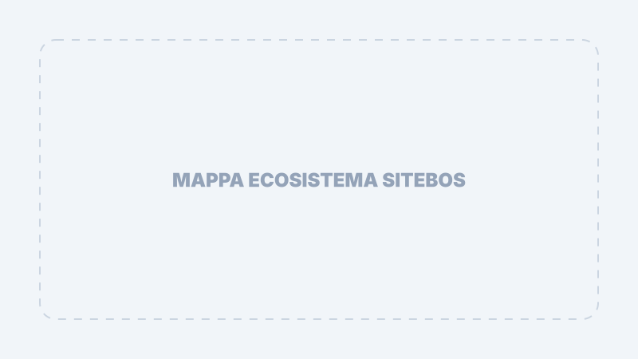

Introduzione e Visione
(Setup Intelligence Telegram Environment Business Operating System)
SiTeBoS (Business Operating System) non è un software, è un ecosistema digitale integrato che funge da sistema operativo per la tua azienda.
La Differenza Fondamentale
"A differenza di un CRM tradizionale, che si limita a tracciare i contatti, SiTeBoS coordina attivamente la conoscenza aziendale e l'operatività tramite l'Intelligenza Artificiale."
Perché SiTeBoS?
Il mercato attuale richiede agilità e precisione. SiTeBoS risolve i colli di bottiglia delle piccole imprese attraverso quattro pilastri fondamentali:
Centralizzazione Know-How
Trasforma l'esperienza del titolare e dei tecnici in protocolli digitali (Blueprints) pronti all'uso.
Automazione Contenuti
Genera automaticamente minisiti e articoli di blog partendo dai dati operativi reali della tua azienda.
Interazione Proattiva
Il bot clienti non risponde solo a domande, ma guida l'utente verso l'acquisto o la richiesta di preventivo.
Controllo Totale
Gestione granulare del team, tracciamento delle missioni e monitoraggio dei costi AI in tempo reale.
Ecosistema SiTeBoS
L'architettura SiTeBoS è progettata per essere "Zero Friction". Si integra nativamente con Telegram, offrendo interfacce enterprise senza la necessità di installare applicazioni esterne.

SiTeBoS è progettato per le SiTeBoS Enterprises: organizzazioni snelle che vogliono scalare mantenendo un'altissima qualità esecutiva senza aumentare la complessità gestionale.